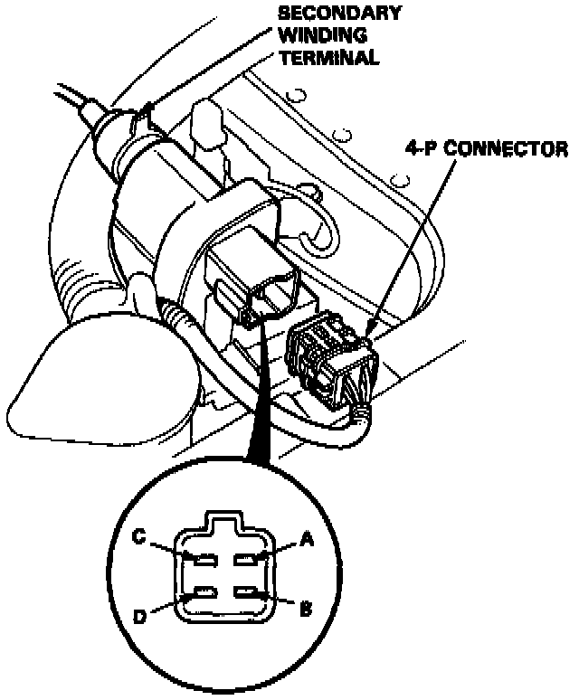
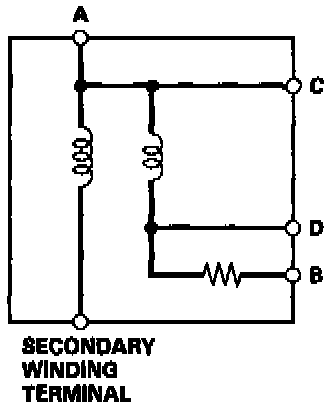

Ignition Coil: Testing and Inspection
INSPECTION1. Turn the ignition switch OFF.
2. Disconnect the 4P connector and ignition coil wire.


3. Using an ohmmeter, measure resistance between the terminals.
- Replace the coil if the resistance is not within specifications.
NOTE: Resistance will vary with the coil temperature; specifications are at 20 °C (68 °F).
Primary Winding Resistance (Between the A and D terminals): 0.3 - 0.5 ohms
Secondary Winding Resistance (Between the A and secondary winding terminals): 10.8 - 16.2 k ohms
Resistance between the B and D terminals: 2.0 - 2.3 k ohms
3. Check for continuity between the A and C terminals.
- Replace the coil if there is no continuity.